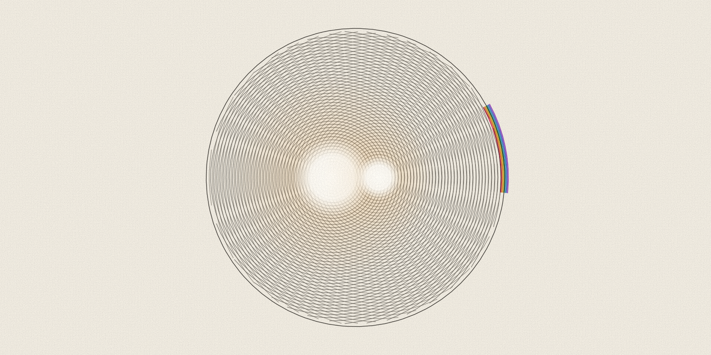
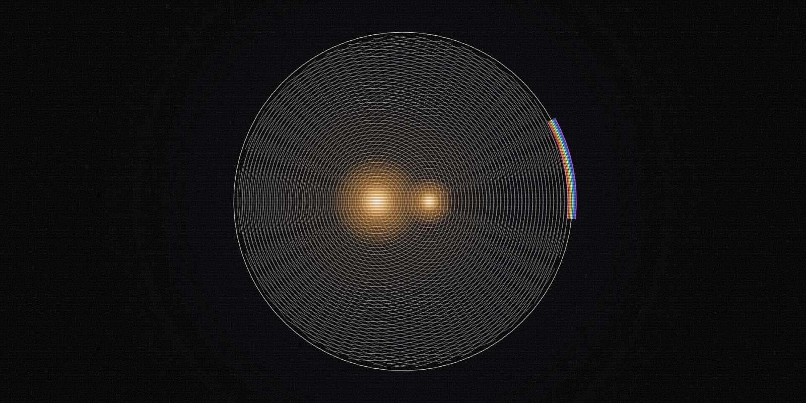
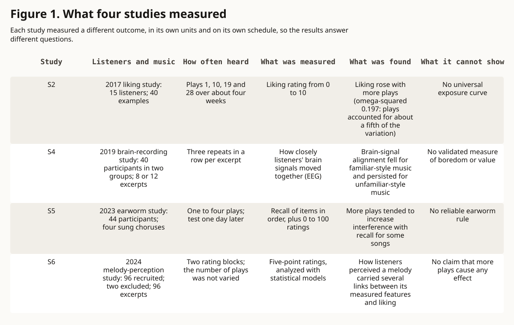

Atlas essay · music and listening
The Second Hearing
Hearing a piece of music again changes the listener's evidence, meaning what they have heard and noticed so far, even when the recording stays the same. This essay reads seven studies of exposure, familiarity and music perception. Liking, attention and memory can move on separate paths in those studies, and from that the essay argues that no single measure, a replay count included, can turn exposure into a verdict on taste or artistic value. After another play, ask what changed, which measure changed and what is still unknown.


In this article
Research summary and limits
Question. What does repeated listening change, and what can it never establish on its own?
Finding. Exposure can raise familiarity and sometimes liking, while attention, recognition, memory interference (a song getting in the way of another memory task) and perceived unpredictability follow different paths.
Evidence. Seven studies cover lab experiments that control how often people hear music, listening in everyday settings, brain recordings (EEG), memory tests, a pooled review of brain-scan studies, statistical models of how listeners perceive melodies and a test of which sounds people count as music. Read together, they show why those outcomes must stay separate.
Limit. The studies differ in listeners, sounds, schedules and units. Together they do not define a universal exposure curve, a single pattern of how liking changes with each extra play that holds for every listener. They also do not explain any one person's taste.
The second hearing is a new measurement
Here's what I can't get over. The file doesn't change. Same recording, same mix. Play it again and something is different anyway, and the something is you. You carry a trace of the first hearing into the second one. A rhythm gets easier to follow. A phrase starts to feel predictable. A texture that was just noise the first time now has a name.
So I treat each hearing as a measurement: a new reading of the same music, taken by a listener who has changed. That's a frame I'm using, and it makes no claim about neuroscience. It only pays off once you name what you're measuring. Liking, recognition, perceived unpredictability, shared neural timing and memory interference are different things, and a change in one can't stand in for a change in another. Shared neural timing is how closely the brain signals of different listeners move in step. Memory interference is how much a song gets in the way of a later memory task.
Four different forms of familiarity
"I know this song" can mean four different things, and people blur them all the time, me included. With piece familiarity, you've heard this exact recording or composition before. Style familiarity is the set of expectations you've picked up from related music, and it kicks in even when the piece is new. During a single hearing you get within-piece repetition, when a rhythm, phrase, chorus, timbre (the color of a sound) or form comes back around. The last one is across-hearing repetition: the next time you meet the same excerpt or piece.
Why split hairs? Because a new piece can sit inside a familiar style, and a piece you've heard a hundred times can stay hard to predict. A 2017 naturalistic study, one built to resemble ordinary listening, found that familiarity with similar music strongly predicted liking, even though participants didn't know the chosen examples at the start. That's style familiarity doing the work without any piece familiarity. A 2019 study used EEG, a recording of electrical activity at the scalp. It sorted excerpts into familiar and unfamiliar styles before it tested immediate repetition. Its result comes two sections down.
The path of liking depends on how people listen
Does hearing something more make you like it more? Three controlled experiments published in 2004 say it depends on how you're listening. The same number of plays had no single fixed meaning across listening conditions. The experiments varied how much exposure people got and how ecological the music was, meaning how close it came to music you'd hear in daily life. They also varied whether people listened with focus or only incidentally, while doing something else. Music heard more often was liked more when people heard it incidentally. That's the easy story, hear it more and like it more, and it holds right up until people start paying attention. With focused listening, liking for the most true-to-life music rose and later declined. For less true-to-life music that rise and fall was weaker or missing. Recognition generally rose more with focused listening than with incidental listening. The true-to-life stuff people sat and focused on wore out its welcome after a while.
The 2017 study ran a different schedule. Fifteen adults rated 40 examples they didn't know at the start. They rated after the 1st, 10th, 19th and 28th presentation, that is, after each of those plays, over about four weeks. Liking rose with more plays at all four complexity levels, as rated by experts. For anyone who wants the stats: a standard test gave the presentation effect as F(3,42)=12.35, p<0.00001. That p value means a rise this big would turn up by chance less than once in 100,000 tries if plays made no difference. Omega-squared, an effect-size measure, was 0.197, so the number of plays accounted for about a fifth of the variation in ratings. The presentation-by-complexity interaction wasn't significant, so the study found no reliable sign that complexity changed that rise.
The studies differ in listening mode, material, schedule and setting, so neither one overrides the other. Read together, they say repeated exposure can change liking and that the path depends on the conditions of exposure. Anybody selling you one curve for everybody is selling something.
Attention is not liking
In the 2019 study, 40 participants in two groups heard instrumental excerpts three times in a row. The researchers measured inter-subject EEG correlation, how closely the brain signals of different listeners rise and fall together, and proposed that engagement with music affects it. The correlation fell across repeats for familiar-style excerpts and held up better for unfamiliar-style ones. They tested the pattern in both groups, each with its own set of excerpts.
The researchers never checked this EEG measure against listener behavior, so nobody has confirmed it tracks musical engagement. A falling correlation can't be read as boredom. A steady one can't be read as quality. Watch for the headline that makes that leap anyway. Attention can shift while liking or recognition heads off somewhere else.
Memory can move without preference
Now, earworms. A 2023 experiment played four new sung choruses to 44 participants, each chorus between one and four times. The next day each song played again while participants did a serial-recall task, which asks you to recall items in order, and they kept at the task after the song ended. Earlier work had found that an earworm, a tune that gets stuck in your head, takes up working memory when the music is sung, as a kind of inner singing. Working memory is the short-term store you use to hold things in mind. So worse recall can be read as a sign that a song is still running in your head. More exposure tended to increase interference with the task during and after some songs, and the effects varied by song. Ratings of familiarity and of wanting to sing along rose between the two sessions.
That pulls apart things everyday talk lumps together. A song can get more familiar, easier to replay in your head and more disruptive to whatever else you're trying to remember, all without getting any more enjoyable. You know the type. Four songs and a modest sample can't establish that repetition reliably creates an earworm, though.
The listener is part of the measurement
A 2024 study built statistical models of how listeners perceive melodies. It recruited 96 nonmusicians and analyzed their ratings of short Western-classical melodies. Two participants with missing age data were excluded. The analyses kept the observations listeners rated unfamiliar, so the results are about melodies people said they didn't know. The researchers computed properties of each melody and asked how listeners perceived its balance, contour (how the melody's line moves up and down), symmetry, complexity and unpredictability. Those perceptions mediated several links between the computed properties and liking. Mediated means the link passed through a middle step, here the listener's perception. Differences between participants and between melodies explained a substantial share of the variation.
Which is a long way of saying you can't treat a formal feature, a property of the notes themselves, as if every listener receives it the same way. The models were correlational. They track what moves together, and they can't show that a perceptual judgment causes liking. Short synthesized piano excerpts can't give you rules that hold across cultures either.
Then there's the hunt for a familiarity spot in the brain. A 2018 review asked which brain areas respond most reliably to familiar music. It was a systematic review, which gathers every study that meets rules set in advance, and it found 23 eligible neuroimaging (brain-scan) studies of adults. Eleven of them, with 212 participants, went into its activation-likelihood meta-analysis, a method that pools brain-imaging studies and looks for places where reported activity peaks cluster. The main analysis found no brain location where reported peaks consistently converged. That null deserves more attention than it gets. It means studies with mixed designs didn't support one tidy familiarity center. It doesn't mean familiarity lacks a neural basis.
And a 2026 set of four preregistered experiments asked something that sounds too simple to test: which sounds do people count as music? Preregistered means the researchers registered their plans before collecting data. In the reported models, across 735 online Western participants, higher-level perceptual judgments separated music, not-music and ambiguous sounds more clearly than low-level acoustic features, the measurable properties of the sound wave. The clearest judgments were recognizing a musical instrument, detecting a melody and inferring that a sound was made on purpose. Made on purpose. Sit with that one for a second. The task tested how people sort sounds into categories. It didn't test liking, so it tells us nothing about preference under repeated listening.
What replay count cannot say
Which brings me to the number everybody looks at. A replay count, the number of times a track was played, records behavior and a chance to learn. It can't tell you whether the listener paid attention, chose the play, finished the track, remembered it later or valued it. Recommendation systems, habit, context, access, social cues and deliberate study can all produce another play. To the counter, autoplay and devotion look the same. Change one fact and try it: say every one of those plays happened on autoplay while you were in another room. The count reads exactly the same. Did you like the song more?
A count also can't establish artistic quality, durable preference, intention or universal taste. Those claims ask more than the number can carry. I get why people lean on it anyway: it's cheap, and everybody already has it. I still think the replay count gets far more credit than it has earned. So when a big play count gets waved around as proof that something is good, ask what's underneath it. Using replay data straight starts with naming its denominator and setting: what the count is out of and where it came from. That means saying whose plays were counted and over what period. It also means naming the recommendation and access conditions, along with the rule that counted a play as finished.
A four-note listening card
Here's a card I made up. It's an editorial exercise. It isn't a tested intervention, meaning nobody has shown in a study that it changes how people listen. The card has four notes: write down your first response; name one detail you can hear for the first time; note one prediction or surprise; name what still resists you. The point is to keep liking, recognition, attention and prediction apart, so they don't smear into one vague impression. It's not there to make you like anything.
I think it earns its keep best when it records a null, a play where nothing moved. A null is a real observation, and it doesn't need ranking. Sometimes nothing new shows up. Liking stays put. Or a detail gets clearer and the song still does nothing for you. Write that down too.
The honest measurement
Another play changes the listener's evidence, what you've heard and noticed so far, and leaves the work's rank right where it was. A second hearing can make structure easier to hear, show you where a prediction went wrong, strengthen a memory trace, or change nothing at all.
So next time, skip "did I like it?" and ask something sharper. What changed between hearings? Which measure changed? What don't I know yet? The file never changed. You did.
Figure 1. What four studies measured
Each study measured a different outcome, in its own units and on its own schedule, so the results answer different questions.

What this cannot show. That more exposure has one meaning, that prediction determines pleasure or that a universal exposure curve exists
Read the data and method
| Study | Listeners and music | How often heard | What was measured | What was found | What it cannot show |
|---|---|---|---|---|---|
| S2 | 2017 liking study: 15 listeners; 40 examples | Plays 1, 10, 19 and 28 over about four weeks | Liking rating from 0 to 10 | Liking rose with more plays (omega-squared 0.197: plays accounted for about a fifth of the variation) | No universal exposure curve |
| S4 | 2019 brain-recording study: 40 participants in two groups; 8 or 12 excerpts | Three repeats in a row per excerpt | How closely listeners' brain signals moved together (EEG) | Brain-signal alignment fell for familiar-style music and persisted for unfamiliar-style music | No validated measure of boredom or value |
| S5 | 2023 earworm study: 44 participants; four sung choruses | One to four plays; test one day later | Recall of items in order, plus 0 to 100 ratings | More plays tended to increase interference with recall for some songs | No reliable earworm rule |
| S6 | 2024 melody-perception study: 96 recruited; two excluded; 96 excerpts | Two rating blocks; the number of plays was not varied | Five-point ratings, analyzed with statistical models | How listeners perceived a melody carried several links between its measured features and liking | No claim that more plays cause any effect |
- Does not prove
- That more exposure has one meaning, that prediction determines pleasure or that a universal exposure curve exists
- Scope
- Four studies published from 2017 through 2024 using adult listener samples
- Units
- Study-specific ratings, EEG correlation, serial recall and model estimates
- Denominator
- S2: 15 listeners; S4: 40 participants; S5: 44 participants; S6: 96 recruited with two excluded
- Date
- Sources checked 1 September 2026
- Transformation
- Each study's published schedule, direction of effect and statistics are restated as reported. Nothing is normalized, meaning rescaled onto a common scale, and no unpublished means are estimated
- Uncertainty
- Each row keeps its own design, population, unit and limitation
- Limitations
- This is not a meta-analysis, which would pool the studies. What each study measured, and the size of each effect, are not comparable across rows.
Sources
- Liking and memory for musical stimuli as a function of exposure. American Psychological Association via PubMed. peer-reviewed primary research; three controlled exposure experiments. Published 2004-03-01; observed 2026-09-01.
- Repeated Listening Increases the Liking for Music Regardless of Its Complexity. Frontiers in Neuroscience. peer-reviewed primary naturalistic repeated-listening experiment. Published 2017-03-31; observed 2026-09-01.
- Neural Correlates of Familiarity in Music Listening: A Systematic Review and a Neuroimaging Meta-Analysis. Frontiers in Neuroscience. peer-reviewed systematic review and activation-likelihood meta-analysis. Published 2018-10-05; observed 2026-09-01.
- Music synchronizes brainwaves across listeners with strong effects of repetition, familiarity and training. Scientific Reports. peer-reviewed primary EEG research. Published 2019-03-05; observed 2026-09-01.
- The song that never ends: The effect of repeated exposure on the development of an earworm. Quarterly Journal of Experimental Psychology. peer-reviewed primary memory-interference experiment. Published 2023-01-09; observed 2026-09-01.
- Perceptual representations mediate effects of stimulus properties on liking for music. Annals of the New York Academy of Sciences. peer-reviewed primary perceptual-modeling study. Published 2024-02-06; observed 2026-09-01.
- Music is a distinct perceptual category with subjective grounds. Scientific Reports. peer-reviewed preregistered primary categorization research. Published 2026-05-27; observed 2026-09-01.
Claim notes and limitations
Repeated exposure can raise liking, but the trajectory changes with attention, stimulus context and exposure schedule.
- Scope
- Controlled and naturalistic repeated-listening experiments using different musical materials
- Uncertainty
- The studies differ in listening mode, ecological validity, sample and schedule and were not pooled
- Does not prove
- A universal exposure curve that holds for everyone, whether a steady rise in liking with plays (monotonic) or a rise and then a fall (inverted-U)
Exact piece familiarity and pre-existing style familiarity are different predictors.
- Scope
- Initially unfamiliar examples and familiar-style versus unfamiliar-style instrumental excerpts
- Uncertainty
- Style classifications are group-level and culturally situated
- Does not prove
- That style familiarity causes liking for an individual listener
Attention-related EEG correlation can change across repeats without measuring liking.
- Scope
- Immediate repetitions of instrumental excerpts compared with separate liking and recognition experiments
- Uncertainty
- The EEG measure was not checked against listener behavior as a sign of musical engagement
- Does not prove
- That shared neural timing measures aesthetic value or private experience
Repetition can increase familiarity and later memory interference without establishing a matching increase in enjoyment.
Sources: S5
- Scope
- Forty-four participants and four novel vocal choruses tested across two days
- Uncertainty
- Effects varied by song, and the stimulus set was small
- Does not prove
- That every repeated song becomes an earworm
Perceived stimulus properties and listener-level variation matter when relating formal features to liking.
Sources: S6
- Scope
- Online ratings of short Western-classical synthesized melodies
- Uncertainty
- Correlational statistical models (structural-equation models) in a Western sample
- Does not prove
- That perception causes the links (causal mediation) or that the results hold across cultures
The main neuroimaging synthesis did not find one brain location where familiarity-related activity consistently converged across studies with mixed methods.
Sources: S3
- Scope
- Twenty-three reviewed adult neuroimaging studies, with eleven entering the main meta-analysis
- Uncertainty
- Brain-scan methods (modalities), stimuli, familiarity definitions and designs varied
- Does not prove
- That familiarity has no neural basis
Higher-level listener judgments explained music categorization better than low-level acoustic features in the reported models.
Sources: S7
- Scope
- Four preregistered experiments with 735 online Western participants
- Uncertainty
- The work studied categorization and did not test preference. It used short isolated excerpts
- Does not prove
- That categorization and pleasure are the same process
Replay count records exposure and an opportunity for learning, and it cannot show quality, durable preference or a listener's reason.
Sources: S1, S2, S3, S4, S5, S6, S7
- Scope
- Editorial synthesis across distinct exposure, attention, memory, perception and categorization measures
- Uncertainty
- No source directly tested every interpretation of replay behavior
- Does not prove
- Any ranking of works, genres or listeners
Corrections
No corrections recorded.